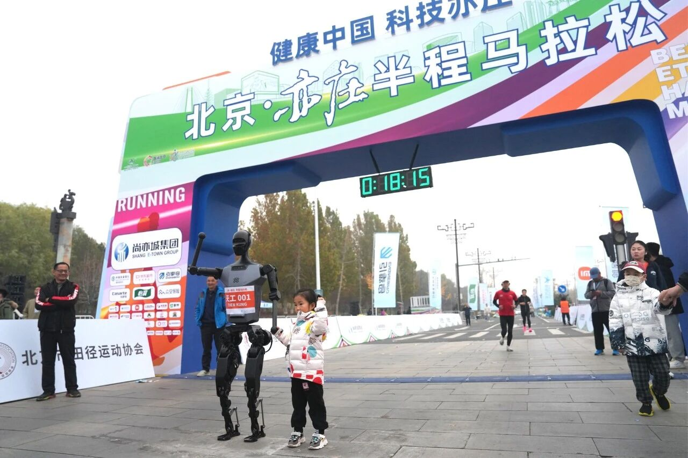
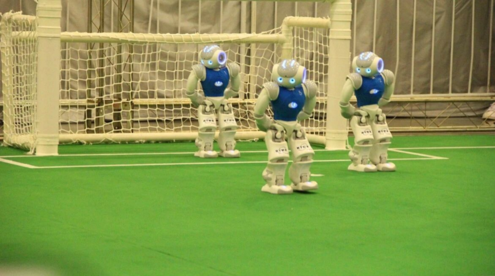
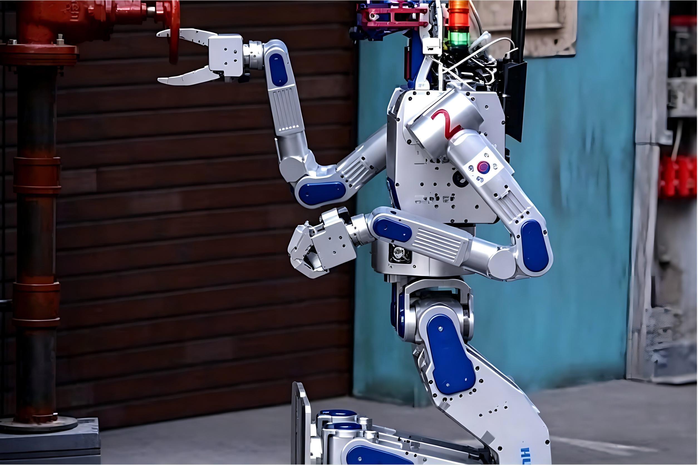
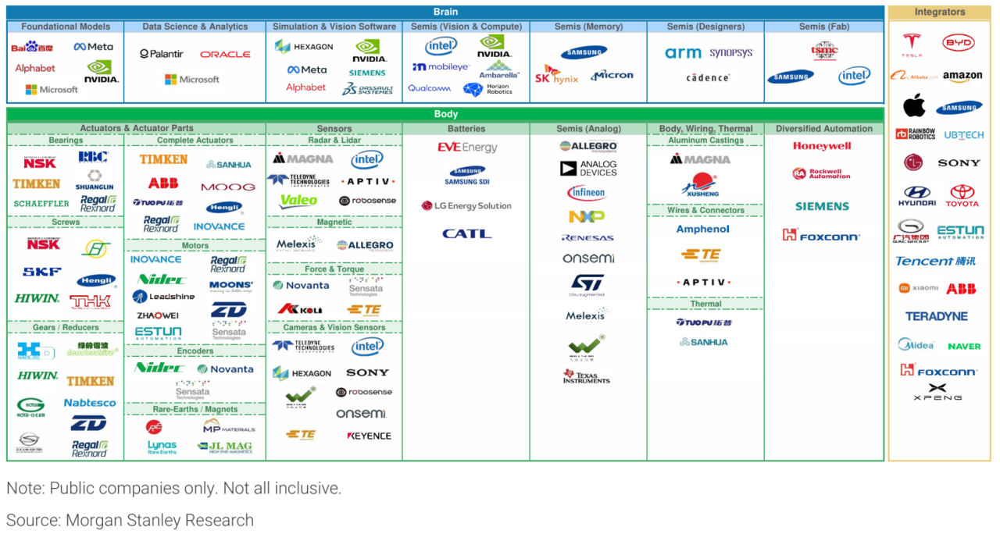
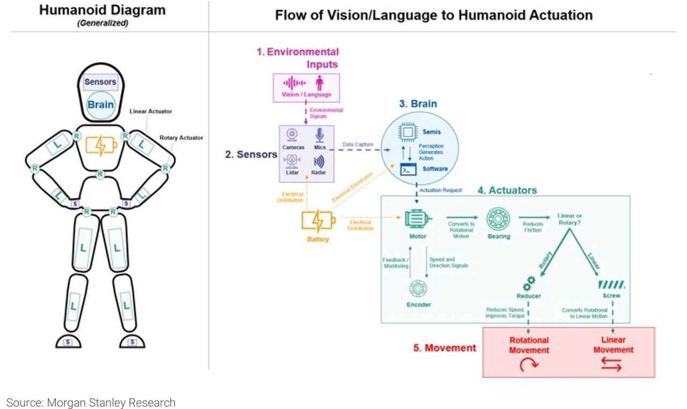
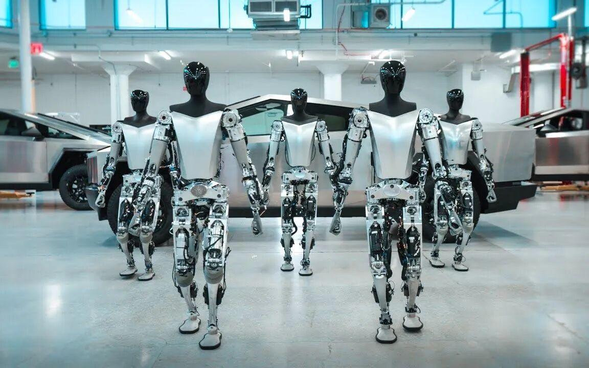
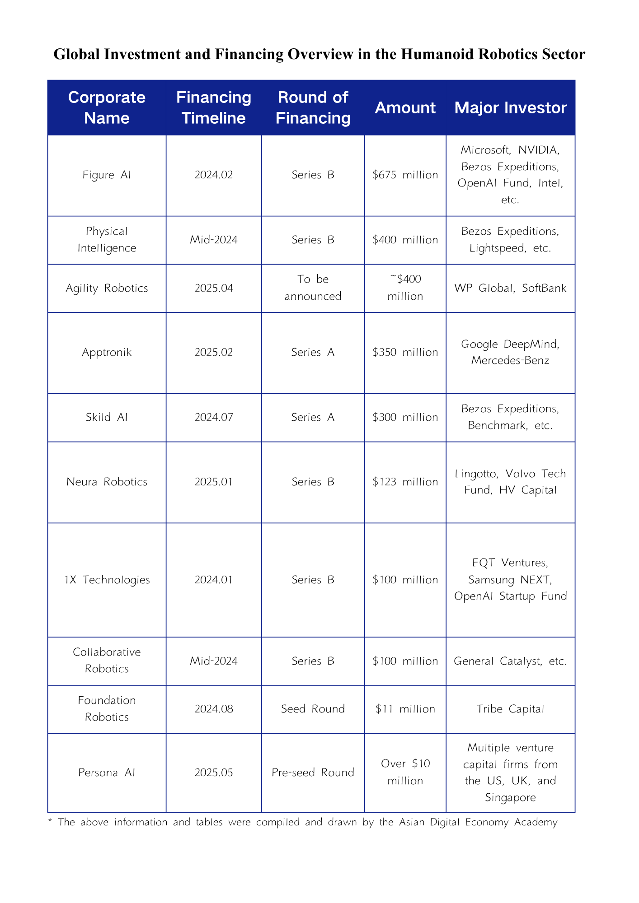
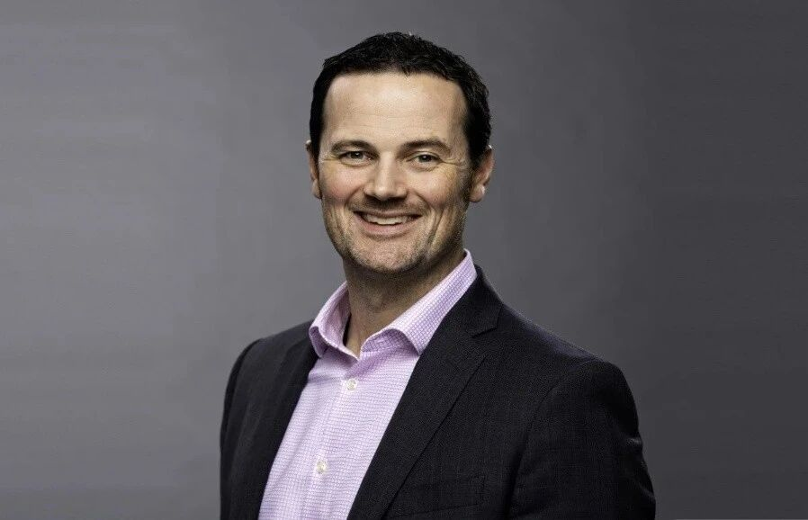

Are Humanoid Robots a Bubble? A Guide to International Expert Debates and the Real Technical Bottlenecks
Key Points
- Beijing’s 2025 Yizhuang half marathon marked the world’s first attempt to place humanoid robots in a 21-kilometer race, pushing mobility, perception, control, and endurance to the limit.
- The humanoid robotics value chain is typically divided into the “brain,” the “body,” and the “integrators,” with China and the United States leading global investment activity.
- International opinion remains sharply divided: skeptics warn of weak commercialization, unreliable real-world performance, and hype-driven expectations, while supporters see long-term value in labor substitution and human-centered service scenarios.
- Major technical barriers remain in actuators, energy storage and thermal management, multimodal perception, dynamic locomotion, and real-time whole-body control and autonomous decision-making.
1. From the Yizhuang Robot Marathon to the International Arena
On April 19, 2025, Beijing Yizhuang hosted the 2025 Beijing Yizhuang Half Marathon and Humanoid Robot Half Marathon, the first event in the world to introduce humanoid robots into a half-marathon format. Organized jointly by the Beijing Municipal Bureau of Sports, the Beijing Municipal Bureau of Economy and Information Technology, and the Beijing Economic-Technological Development Area, the race represented a landmark public test of embodied intelligence.
The approximately 21-kilometer course featured varied and demanding road conditions, placing comprehensive stress on robot hardware, perception, control algorithms, and especially battery endurance. Thousands of human runners participated alongside 20 humanoid robot teams drawn from universities, research institutes, and companies across multiple regions.

Comparable competitions already exist internationally, though with different goals. RoboCup, one of the world’s most influential robotics competitions, includes a Humanoid League centered on robots capable of autonomous walking, sensing, and decision-making in real environments. Strict rules limit sensors and morphology to preserve fairness and difficulty, while events such as 4-on-4 robot soccer and technical challenges test dynamic balance, path planning, visual recognition, and team coordination.

Another major benchmark is the DARPA Robotics Challenge, designed to develop robots capable of operating in dangerous environments inaccessible to humans, particularly for humanitarian rescue and disaster response. Its tasks simulate high-risk field operations such as driving to a disaster site, traversing rubble, clearing debris, opening doors, climbing ladders, manipulating tools, shutting off leaking valves, and connecting firefighting equipment. Together, these competitions show that humanoid robots are moving from staged demonstrations toward rigorous real-world evaluation on a global stage.

2. Global Humanoid Robot Industry Chain Analysis and Latest Investment & Financing Trends
Robotics Industry Chain Map
The humanoid robot industry chain can be understood through three core layers: the “brain,” the “body,” and the “integrators.” The “brain” includes AI chips, software, and semiconductors—the intelligence stack that enables autonomy. Within this layer, the most critical components are foundation generative AI models for autonomous behavior, along with simulation environments and digital twin technologies used for training and validation. Leading participants include major technology firms such as Nvidia, Microsoft, Google, and Meta, as well as chip and EDA companies such as Arm, Synopsys, and Cadence.


The “body” consists of sensors, actuators, wiring and connector networks, batteries, and lightweight structural materials. Humanoid robots typically rely on aluminum alloys and plastics to reduce mass while preserving strength. This layer spans a wide supplier ecosystem: actuator leaders include NSK, Hengli Hydraulic, Harmonic Drive, and Estun; sensor suppliers include Analog Devices, Hexagon, Intel, Aptiv, and Keli Sensing; battery makers include CATL, EVE Energy, and LG Energy Solution; analog semiconductor firms include Allegro MicroSystems, Infineon, and Melexis; and body, wiring, and thermal-management components involve companies such as Amphenol, Aptiv, and Magna.
The “integrators” are the companies building complete humanoid systems. They are dominated by automakers and large technology firms and can be grouped into four broad categories: automotive manufacturers such as Tesla and BYD, consumer electronics companies such as Apple and Sony, e-commerce and internet platforms such as Amazon and Alibaba, and traditional robotics manufacturers such as ABB and Teradyne. This structure highlights how humanoid robotics sits at the intersection of AI, advanced manufacturing, mobility, and consumer-facing technology.
Global Investment and Financing Trends
By geography, the most active markets for humanoid robot investment are China and the United States. According to data cited from the China Academy of Information and Communications Technology, from 2014 through the third quarter of 2024, China recorded 176 financing events involving humanoid robotics companies, accounting for 40% of the global total, with more than US$5.5 billion raised, or 52% of the global amount. Over the same period, the United States recorded 106 financing events, or 24% of the total, with more than US$3.4 billion raised despite several undisclosed rounds, representing roughly 33% globally.
Momentum has accelerated further since 2024. From 2024 through the first quarter of 2025, China’s humanoid robotics sector saw 64 financings above the ten-million-yuan level, including 19 in the first quarter of 2025 alone, up 280% year on year. Internationally, the sector has also seen multiple large funding rounds, with major funds actively building positions and investment vehicles linked to companies such as Microsoft and Nvidia entering the field. The financing landscape suggests that humanoid robotics has shifted from a niche frontier to a contested strategic industry attracting both industrial capital and long-horizon technology investors.


3. "Humanoid" Controversies and Deep Insights from Internationally Recognized Figures
As advances in artificial intelligence and robotics continue to accelerate, humanoid robots are moving from laboratories into consumer, industrial, and service settings. Yet beneath the surge of enthusiasm and capital, the field is still shaped by a basic debate: does it truly make sense to pursue robots in human form, or is “humanoid” often an expensive detour from practical automation?
At the same time, the debate is not merely philosophical. It turns on concrete engineering constraints that still separate humanoid robots from scalable deployment. Among the most important are high-power-density joint actuators, battery systems capable of long operating hours with fast recharging, multimodal perception for safe navigation and interaction, dynamic walking and balance control on heterogeneous terrain, and real-time whole-body control paired with low-latency autonomous decision-making. Progress is visible across the United States, China, Japan, and Europe, but most of these capabilities still require significant breakthroughs before enterprise-scale deployment becomes routine.
Opponents or Cautious Voices: Commercialization Bottlenecks and Technology Bubbles
MIT roboticist Rodney Brooks has argued that the humanoid robotics industry is being distorted by two recurring errors: excessive reliance on human-like appearance as an attention magnet, and unrealistic expectations about the speed of technical progress. In his view, much of the current excitement is driven by flawed forecasting, including assumptions that progress will scale exponentially and that deployment will follow quickly once prototypes exist. A robot that looks human, he argues, does not automatically solve the underlying problems of robust perception, control, energy efficiency, and physical intelligence in the real world.
Brooks has also stressed that general-purpose humanoid robots still face hard bottlenecks in AI efficiency, sensing and control architecture, adaptability, and power consumption. Rather than celebrating surface-level mimicry or piling on compute, he calls for renewed focus on the foundational challenges of embodied operation in complex environments. His warning is essentially that hype can obscure the gap between impressive demonstrations and dependable real-world capability.
Investor Zhu Xiaohu of GSR Ventures has expressed a similarly cautious stance from a commercialization perspective. In March 2025, he said the firm was exiting humanoid robot investments in batches because the business model remained unclear. His point was not that the technology lacks interest, but that many companies still cannot identify customers willing to pay the high costs of deployment at scale. He argues that capital should prioritize AI businesses already delivering measurable value in applications such as customer service, sales, meeting summarization, and marketing content rather than speculative hardware narratives.
Fu Sheng, CEO of Cheetah Mobile, has also urged the market to remain rational. He attributes much of the enthusiasm around bipedal robots to hero-worship, capital momentum, and the halo effect created by high-profile technology leaders. For him, the core question is not whether a humanoid robot can walk, but whether it can complete tasks with the level of reliability commercial environments demand. A one-percent error rate may sound small, but in practice it can make a product unusable.
Fu argues that the industry still faces large gaps in motors, mechanical design, and intelligent control, making large-scale commercialization of general-purpose bipedal robots unlikely in the near term. Compared with an all-out push for human resemblance, he sees stronger near-term promise in architectures that combine wheels, robotic arms, and voice interaction, which can offer better stability and better scenario fit. His broader message is that the sector must solve for cost, reliability, and real deployment before claiming that humanoid form is the inevitable future.
Bill Gates takes a more balanced but still restrained view. He has said that robots with human-like form could help in logistics, manufacturing, and household services by taking on repetitive, undesirable, or dangerous tasks, while AI systems could further augment sectors such as healthcare and education. Yet he also emphasizes that robots remain far from replacing human creativity and judgment, and that wide commercialization still depends on overcoming cost and technical maturity barriers. Compared with fully general-purpose humanoids, he appears more optimistic about specialized industrial and medical robots.
Supporters of "Humanoid" Robotics: Technological Vision and Scenario-Driven Approaches
Elon Musk has been one of the most outspoken champions of humanoid robotics. During Tesla’s earnings discussions, he said the company aims to produce thousands of Optimus units by the end of 2025 and eventually reach annual output above one million units within five years. His logic is that humanoid robots can substitute for people in dangerous environments such as nuclear maintenance and potentially in space exploration, while also benefiting from deep technological overlap with Tesla’s autonomous driving stack in sensing, control, and AI. In this view, the humanoid form is not a gimmick but a scalable platform for general labor automation.

Brady Watkins, Senior Vice President and General Manager of SoftBank Robotics America, offers a more pragmatic version of the pro-humanoid case. He argues that the industry will be advanced not by technology spectacle alone, but by products that can be deployed at scale and deliver clear user value. SoftBank’s Pepper, for example, was widely used in retail, hospitality, and exhibition settings not because it matched human capability, but because its approachable humanoid presence and interactive features improved customer experience and brand engagement.
Watkins also highlights collaborative robotics as a crucial bridge between current technical limits and practical use. In this model, robots handle repetitive tasks while humans retain responsibility for complex judgment and frontline interaction, improving both efficiency and safety. SoftBank Robotics America is exploring next-generation applications in healthcare support, elder care, intelligent buildings, and workplace automation. This scenario-driven perspective suggests that support for humanoid robotics need not depend on claims of imminent human equivalence; it can instead rest on the idea that human-centered form factors may create value in selected environments where trust, interaction, and social legibility matter.
- [1] Brooks, R. Parallels between Generative AI and Humanoid Robots. RodneyBrooks.com, May 5, 2025. rodneybrooks.com/parallels-between-generative-ai-and-humanoid-robots.
- [2] Bains, S. Robots Need Physical, Not Just Artificial, Intelligence (Podcast). EE Times, March 1, 2025. eetimes.com/podcasts/robots-need-physical-not-just-artificial-intelligence.
- [3] Abu (A Bu). Fu Sheng No Longer Spars with Zhu Xiaohu: Jointly Calls Humanoid Robots a "Harmful Bubble". 36Kr, April 6, 2025. 36kr.com/p/3236898014117889.
- [4] Aiello, C. Why Bill Gates Sees Robot People in Your Company's Future. Inc., April 2025. inc.com/chloe-aiello/why-bill-gates-sees-robot-people-in-your-companys-future.
- [5] Business Insider. Bill Gates on AI, Job Shortages, Doctors, Teachers, and Work-Life Balance. Business Insider, April 2025. businessinsider.com/bill-gates-ai-job-shortages-doctors-teachers-work-free-time-2025-4.
- [6] Investopedia. 4 Key Takeaways From Elon Musk's Comments During Tesla's Q1 Earnings Call. Investopedia, April 2024. investopedia.com/4-key-takeaways-from-tesla-q1-2024-earnings-call-8637900.
- [7] Tardif, A. Brady Watkins, Senior VP & GM at SoftBank Robotics America – Interview Series. Unite.AI, 2025. unite.ai/brady-watkins-senior-vp-gm-at-softbank-robotics-america-interview-series.
- [8] Engineers Outlook. SoftBank Robotics America: Pioneering Human-Centric Robotics for a Smarter Future. Engineers Outlook, 2025. engineersoutlook.com/softbank-robotics-america-pioneering-human-centric-robotics.
- [9] Zong, H., Ai, J., Fang, L., et al. A novel hydraulic swing actuator with high torque density for legged robots. Smart Materials and Structures, Vol. 34, No. 1, 2024, p. 015034. DOI: 10.1088/1361-665X/ad96d9.